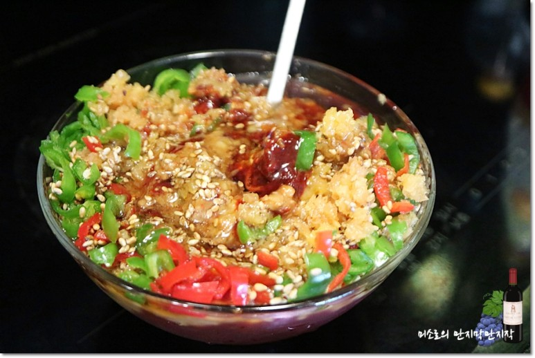
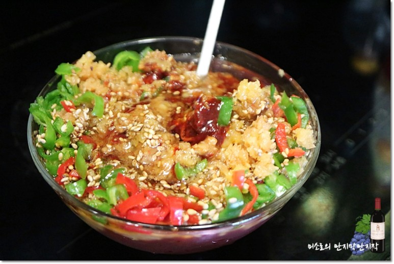

돼지고기 간장불고기 쌈장 친목도모 텃밭 소풍
아이들 어렸을적 만나던 엄마들과 재은네 텃밭으로 소풍
각자 해올수 있는것 한가지씩 준비해들고 만나기로했어요.

미소로는 텃밭과 집이 가까워 돼지고기 간장불고기와 쌈장,
콩을 넣은 밥을 지어가기로했습니다.
상추에 고기를 싸먹어야하니 쌈장을 먼저 만들었어요.
고추장5TS에 된장2TS를 섞어주고요.
 

알싸한 매운맛이 좋은 청, 홍고추를 송송송 썰어넣고 통깨 넉넉히, 다진마늘1TS, 참기름1TS, 맛술2TS넣어 잘 섞어주면 맛있는 쌈장 완성
더보기..